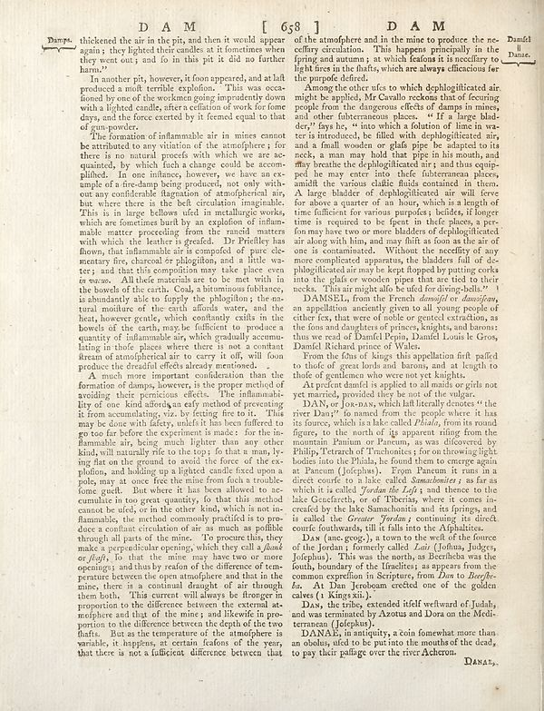

Scan ID britannica:309f765b1ecc83e0a7f7762e44b4a927a7555443:train:1214
Image SHA-256 17d180a99e0a48546a555d98cd7fdf15bb8f8ea4b751c50e02536eba79c2473a
Status: ok. Running header: DAM [ 658] (catchword). Removed page furniture: Page-header: DAM [ 658].
PDF · raw Parse reply · LaTeX
Entries: E0095 DAMSEL DAN DANAE

| # | Class | Box | Parse 3.5 | Used text | Source |
|---|---|---|---|---|---|
| 1 | Caption | [0.708, 0.0258, 0.8203, 0.0469] | DAM | DAM | super_vl |
| 2 | Text | [0.0801, 0.0492, 0.1406, 0.082] | Damps. | Damps. | super_vl |
| 3 | Text | [0.1367, 0.0484, 0.5283, 0.1031] | thickened the air in the pit, and then it would appear again; they lighted their candles at it sometimes when they went out; and fo in this pit it did no further human? | thickened the air in the pit, and then it would appear again; they lighted their candles at it sometimes when they went out; and so in this pit it did no further harm. | super_vl |
| 4 | Text | [0.1377, 0.1023, 0.5293, 0.1852] | In another pits, however, it from apparently, and at half produced a multi terrible explolions. "This was oca- fioned by none of the workmen going independent down with a lighted candle, after a ceilation of work for form days, and the force exerted by it femen equal to that of gun powder. | In another pit, however, it soon appeared, and at last produced a most terrible explosion. This was occasioned by one of the workmen going imprudently down with a lighted candle, after a cessation of work for some days, and the force exerted by it seemed equal to that of gun-powder. | super_vl |
| 5 | Text | [0.1387, 0.1859, 0.5273, 0.5227] | The formation of unintractable air in mines cannot be attributed to any variation of atmospheric or there is no natural process with which we are ac- quanted, by which fish a change could be accom- plished. In one influence, however, we have an ex- ample of a champ being produced, not only with- out any confidential flagation of atmospheric air, has where there is the belt circularism recognizable. This is in large bellows ufeid in metallurgie works, which are foretime birth by an explosion of infam- make matter processing from the mind matters with which the leather is greeded. Dr Priefley ha | The formation of unintractable air in mines cannot be attributed to any variation of atmospheric or there is no natural process with which we are acquainted, by which such a change could be accomplished. In one instance, however, we have an example of a fire-damp being produced, not only without any considerable flagration of atmospheric air, but where there is the belt circulation imaginable. This is in large bellows used in metallurgic works, which are sometimes burst by an explosion of inflammable matter proceeding from the rancid matters with which the leather is greased. Dr Priestley has | super_vl |
| 6 | Text | [0.1357, 0.5234, 0.5264, 0.9273] | A much more important consideration than the formation of damps, however, is the proper method of avoiding their practical effects. The inflammation lies at one kind develops on eye methods of preventing it from accumulating, viz., by letting fire to it. This may be done with flying under it has been offered to get too far before the very moment is made: I’m the insan- hammable air, being much lighter than any other kind will naturally fit to the day so that a man, ly- ing flat on the ground to avoid the force of the ex- plofion, and holding up a lighted candle fixed upon a pole, you at once f | A much more important consideration than the formation of damps, however, is the proper method of avoiding their pernicious effects. The inflammability of one kind affords an easy method of preventing it from accumulating, viz. by letting fire to it. This may be done with safety, unless it has been suffered to go too far before the experiment is made: for the inflammable air, being much lighter than any other kind, will naturally rise to the top; so that a man, lying flat on the ground to avoid the force of the explosion, and holding up a lighted candle fixed upon a pole, may at once free the | super_vl |
| 7 | Text | [0.5352, 0.0453, 0.9268, 0.1172] | of the atmosphere and in the mine to produce the ne- ceffiny circulation. This happens principally in the firing and assembly, at which relation if necessary to fight iron in the fluids, which are always efficacious for the purpose defend. | of the atmosphere and in the mine to produce the necessary circulation. This happens principally in the spring and autumn; at which seasons it is necessary to light fires in the shafts, which are always efficacious for the purpose desired. | super_vl |
| 8 | Text | [0.5361, 0.118, 0.9258, 0.4125] | Among the other afes to which dephloglitated air, might be applied, Mr Cavallo reckona that of recurring people from the dangerous effects of dams in mines, and some fishermenous places. If a large blad- der;" fays he, " into which a foliation of lime in va- ter is introduced, be filled with dephlogilitated air, and in his wooden or glala pipe. He adapted to its deck, a man may hold that pipe in his mouth, and may breathe the ofphiglicated clay, and thus equip- pedel be may enter into the fubtermous places, until the various shade fluids contained in them. A large bladder of dephiglittered air | Among the other uses to which dephlogisticated air might be applied, Mr Cavallo reckons that of rescuing people from the dangerous effects of damps in mines, and other subterraneous places. "If a large bladder," says he, "into which a solution of lime in water is introduced, be filled with dephlogisticated air, and a small wooden or glass pipe be adapted to its neck, a man may hold that pipe in his mouth, and may breathe the dephlogisticated air; and thus equipped he may enter into the subterraneous places, amidst the various noxious fluids contained in them. A large bladder of dephlogisticate | super_vl |
| 9 | Text | [0.5762, 0.4133, 0.9248, 0.4945] | DAMSEL, from the French _damself or demasifons_, an application ancestri given to all young people of eitherys, that were of endular or genest extraction, as the fons and daughters of princes, knights, and barons: thus we read of Daniel Prisin DaudiL Louis le Gros, David Richard spruce (My Wales. | DAMSEL, from the French damoisel or damoisel, an appellation anciently given to all young people of either sex, that were of noble or gentle extraction, as the sons and daughters of princes, knights, and barons: thus we read of Damel Pepin, Damel Louis le Gros, Damel Richard prince of Wales. | super_vl |
| 10 | Text | [0.542, 0.4938, 0.9238, 0.5352] | From the folos of Kings this appellation ftp piled to theife of great locals and barons, and a length to think of gestionome who were not yet lengths. | From the sons of kings this appellation first passed to those of great lords and barons, and at length to those of gentlemen who were not yet knights. | super_vl |
| 11 | Text | [0.541, 0.5344, 0.9229, 0.5609] | At present damful is applied to all meals or girls not yet material, provided by be not of the vulgar. | At present damsel is applied to all maids or girls not yet married, provided they be not of the vulgar. | super_vl |
| 12 | Text | [0.54, 0.5602, 0.9219, 0.7492] | DANX, er Jo now, which shall literally denotes “the river Dan?” to named from the people where it has its forces, which is also called Plulah, from its round figure, to the north of big apparent ting from the mountain Panman or Pancum, as was discovered by Philip, Tetrarch of Trecontenes, for on throwing light bodies into the Plulah, he found them to emerge at Pancum (Jofaphay) Eron Pancum it runs in a direct course to a lake called _Manandames_ is for as which is called _Yardan the Lafa_s and theme to the lake Cheretherly, of Tiberias, where it comes incrediely the lake Samanthouis and its fr | DAN, or JOR-DAN, which last literally denotes “the river Dan;” to named from the people where it has its source, which is a lake called Phiala, from its round figure, to the north of its apparent rising from the mountain Panium or Paneum, as was discovered by Philip, Tetrarch of Trachonites; for on throwing light bodies into the Phiala, he found them to emerge again at Paneum (Josephus). From Paneum it runs in a direct course to a lake called Samachonitis; as far as which it is called Jordan the Lesser; and thence to the lake Gennesareth, or of Tiberias, where it comes increased by the lake Sa | super_vl |
| 13 | Text | [0.5391, 0.7508, 0.917, 0.843] | Dax (use grow), a term to the wet of the fource of the Jordan’s formerly called Leair (Jofhan, Judges, Jofaphus). This was the north, as Berichholz was the fourth, bounded of the patient, as appears from the common expection in Scripture, from Dar to Beefhe- ha. At Dan Jeradeam credited one of the golden calers (1 King size). | DAN (anc. geog.), a town to the west of the source of the Jordan; formerly called Laish (Joshua, Judges, Josephus). This was the north, as Beersheba was the south, boundary of the Israelites; as appears from the common expression in Scripture, from Dan to Beersheba. At Dan Jeroboam erected one of the golden calves (1 Kings xii.). | super_vl |
| 14 | Text | [0.5381, 0.8422, 0.918, 0.8836] | Dax, the tribe, extended itself wellward of Judah, and was permitted by Azotus and Dora on the Medi- terminom (Jofaphay). | calves (1 Kings xii. 29). DAN, the tribe, extended itself westward of Judah, and was terminated by Azotus and Dora on the Medi- terranean (Joppa). | super_vl |
| 15 | Text | [0.5371, 0.8844, 0.9189, 0.9234] | DANAE, in antiquity, a coin famewhat more than an obolus, died to be put into the mouths of the dead, to pay their patige over the river Acheron. | DANAE, in antiquity, a coin somewhat more than an obolus, used to be put into the mouths of the dead, to pay their passage over the river Acheron. | super_vl |
| 16 | Picture | [0.8506, 0.9211, 0.916, 0.9383] | DANAS | DANAS | parse |
Britannica scans: National Library of Scotland, CC0 1.0. Wikipedia text: Wikipedia contributors, CC BY-SA 4.0, revision links on each page. Generated 2026-10-18T13:26:14+00:00.